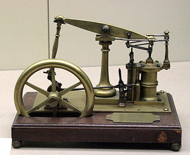
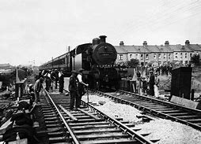
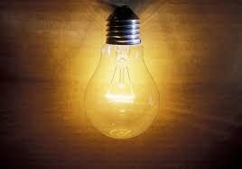

Throughoout history, humans have progressed beyond limits. As an intelligent species, we have evolved so much and made many accomplishments throughout our lifetime. Every human ever born will bring a great difference to the future generations. With the technology we have today, we have made a great impact on everything around us. But it all started small and then kept progressing until today. Here are five of the inventions that changed the lives of humans forever.
Thomas Savery planned the first practical steam engine in 1698. It was one of the greatest innovations in history making him infamous. Later in the year 1781, a man named James Watt patented the steam engine as well as improved it very much. He was the one who went on to fuel and start one of the most greatest technological leaps in human history during the Industrial Revolution. In later years, the steam engine’s basic principle technology set the stage for greater innovations like internal combustion engines and jet turbines, which was the introduction that prompted the rise of cars and aircraft during the 20th century. Here is an image of the steam engine.
Railway is a mode of transport which can carry a large number of passengers with ease of comfort and/or heavy loads for long and great distances. Modern trains history dates back to around 200 years ago, which revolutionized the way we travel and the world of transport. With the power of the trains, industries had the power to reach to far lands and recieve raw materials in abundance. After the invention of the steam engine, more research was carried out throughout the entire world for a better design that could improve stability, efficiency and weight. The commercial appearance of train networks began in the late 1820s, and the pioneer in that field was inventor George Stephenson, with his design known as the Rocket, the most famous early railway locomotive. The Rocket gained great expansions in the lands, and soon became very popular. In 1821, he was employed as an engineer for the construction of the Stockton and Darlington railway, which was opened as the first public railway in 1825. The success of Rocket and the opening of the Stockton to Darlington railway line energized railway industry like never before. Here is an image of oldern day railways.
On December 17, 1903, Wilbur and Orville Wright (also known as the Wright brothers) achieved something that no man had ever done before. They had engineered the first powered, sustained and controlled airplane. While flying machines had been dreamt about in the time since famous artist and original inventor of the idea Da Vinci, the Wright Brothers were the ones that were able to achieve this idea, and became the biggest successes. Airplanes were just an imagine which they turned into a reality. Beginning with just gliders, the duo laid the foundation for modern aeronautical engineering. Additionally, new businesses boomed such as industrialization of the airplane, along with a number of people being trained to fly planes. The possibility to fly over thousands of miles in less time would not have been made possible if the aircraft were not invented, a success that only the Wright brothers were able to achieve.
The energy we use today at home, our office and many more places is a literall "bright idea" from more than 150 years ago. Pioneered in the early 19th century by Humphry Davy, electric lights developed throughout the 1800s was one of the most influential, great inventions of all times. The cause behind this was because society had never seen such a convenience before, and everyone wanted it. Edison and Swan were the first patenters of the light bulb in 1879 and 1880. In the mid-1980s, new technology known as the CFLs hit the market. But the drawbacks such as high cost, size, low light output, and inconsistent performance made them less prominent in the market than the original light bulb. Currently, in our generation, the best source of light known is the LED light. LEDs in comparison offer the best source of energy savings on the market due to their efficiency and prices.
The transistor is an essential component in almost every modern electronic gadget. It is a thin and compact component that performs two main functions. It can either perform as an amplifier or a switch. In 1926, Julius Lilienfeld patented a field-effect transistor, but the working device was not feasible. It had inconsistencies was very large. In 1947 John Bardeen, Walter Brattain, and William Shockley developed the first practical transistor device at Bell Laboratories. It won the trio 1956 Nobel Prize in physics. Transistors have become a fundamental piece of the circuitry components in countless electronic devices including televisions, cell phones, and computers making a remarkable impact on technology. Without the aid of transistors, technology would not be as advanced as it is today.